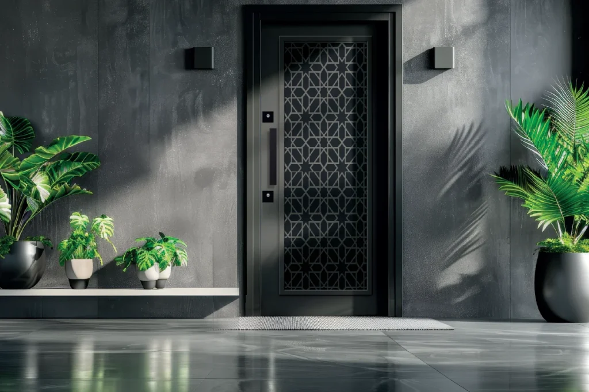

Steel doors are no longer chosen for security alone. Thanks to laser cutting technology, they have become a decorative element in homes and workplaces. Laser-cut steel doors combine beauty and durability in modern architecture and adapt to different settings with a wide range of design options.
What are laser-cut steel doors?
Laser-cut steel doors are produced by processing metal sheets starting from 0.5 mm into desired patterns using specialized laser cutting machines. These panels are fitted into standard or custom frames as required. Smoked, frosted, white, or tempered glass can be added from behind to enhance both security and appearance.
Laser cutting makes it possible to create detailed patterns and motifs that conventional steel doors cannot achieve, allowing custom door designs for every space.
Laser Series
Browse Laser Series products
Visit the series page for laser-cut steel door models or request a quote.
Advantages of laser-cut steel doors
Aesthetic versatility
Suits minimalist, modern, classic, or bold designs. Options range from geometric patterns to natural motifs.
High security
Durable thanks to the steel structure and break-resistant glass options. Laser panels add visual value without weakening the door.
Functionality
Available as single-leaf, double-leaf, side-panel, or custom-frame configurations. Sizes and opening directions can be tailored.
Durability
Suitable for all seasons and resistant to outdoor conditions. Durable powder coating provides long life against rust and corrosion.
Light and airflow
Glass details turn the door into a source of natural light. Reduces the need for artificial lighting in dark entryways.
Design and color options
Frame types
- Standard frame: Classic dimensions and quick installation
- Custom frame: Sizes tailored to the space and architectural project
Color choices
Offered in colors such as black (matte/gloss), gold, anthracite gray, bronze, and white using durable coating technology.
Door accessories
- Modern handles (stainless steel, brass, matte black)
- Decorative knockers and custom-designed frames
- Digital locks and automatic closing mechanisms
Applications
- Villa entrances — security and visual impact in upscale homes
- Apartment exterior doors — robust structure for heavy daily use
- Commercial buildings — high security in offices and business centers
- Institutional facilities — maximum protection where security requirements are strict
Why choose a laser-cut steel door?
- Unique, custom patterns
- Long service life with quality materials and craftsmanship
- A prestigious investment that raises the value of the space
- Simple maintenance requirements
Conclusion
If you want a door that combines security and aesthetics, laser-cut steel doors may be the right choice. Whether you prefer a clean modern line or a classic look, doors produced with laser cutting technology add lasting value to your space.
At Yiğit Çelik Kapı, we have combined security and beauty in laser-cut steel door models since 2003. With TSE-certified production and 40,000 m² of manufacturing capacity, we deliver tailored solutions for every project.
Yiğit Çelik Kapı
Laser-cut steel door models
Get a free quote — our specialist team is ready to help.